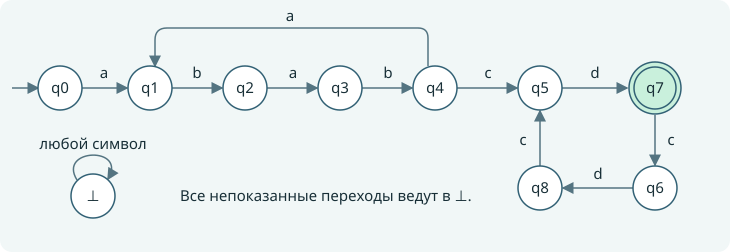

Inteligența Artificială · ЛР1 · Вариант 11
Конечный автомат
Распознаёт слова вида (ab)n(cd)m, где n ≥ 2 и чётно, а m ≥ 1 и нечётно.
Диаграмма переходов

Трасса слова
| Шаг | Состояние | Символ | Переход в |
|---|
Inteligența Artificială · ЛР1 · Вариант 11
Распознаёт слова вида (ab)n(cd)m, где n ≥ 2 и чётно, а m ≥ 1 и нечётно.

| Шаг | Состояние | Символ | Переход в |
|---|